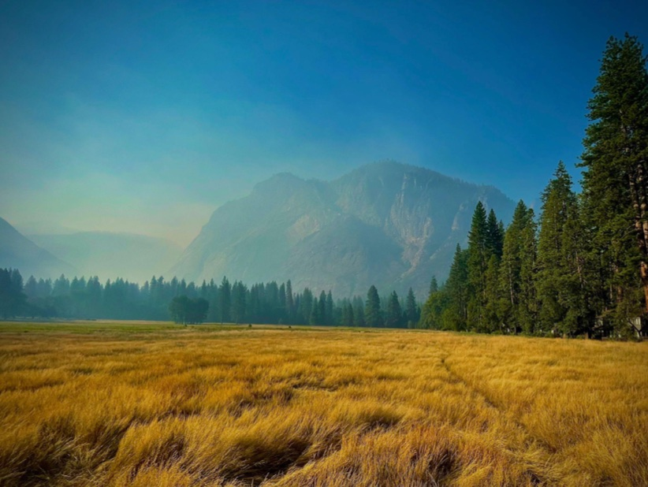
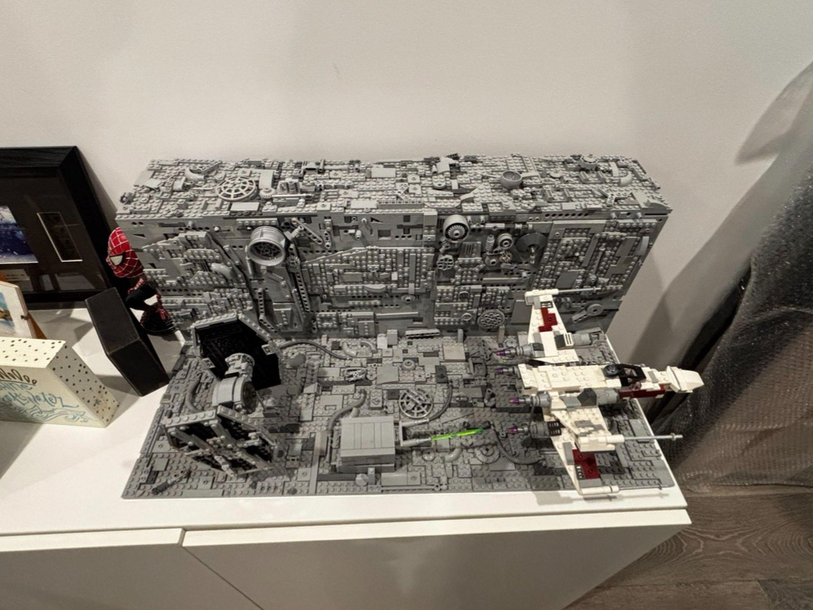
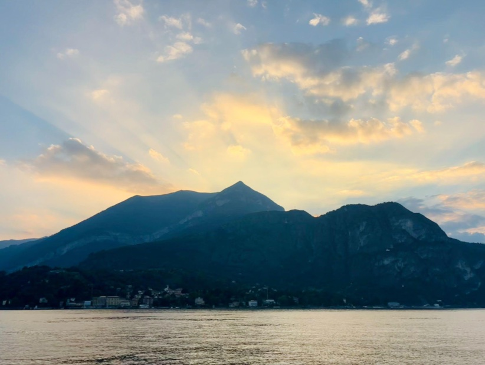
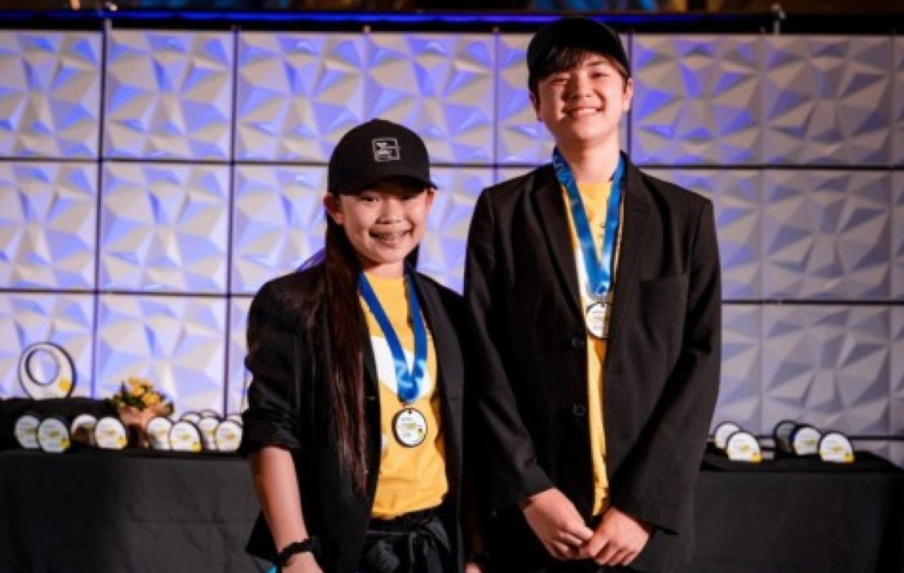

Wyatt Newbill
Hey, I'm Wyatt, a high school writer and filmmaker from California. My work tends to circle around big questions: consciousness, responsibility, identity, and what it means to be human. I'm still figuring most of it out, though, which is probably part of the point. I've received recognition from, well, the people who've read my work (which does include the Scholastic Art & Writing Awards, and The New York Times). When I'm not writing, I can probably be found reading, watching movies, making LEGOS, taking photos, or just laying around and thinking about life.
Right now, I'm working on my debut novella, The Lighthouse, and my debut feature film, Forever Young (filming in March!). Aside from that, I'm also working on my photography and directorial skills - and some short stories and films I'm toying with, like "The Switchman."
What I write about
- Screenwriting
- Fiction
- Philosophy
- The human condition
Along the way
- Spar and Thannitus, produced and screenedNorthwestern NHSI
- Gold Key, Scholastic Art & Writing AwardsThe Steps Beyond Time
- Honorable Mention, Scholastic Art & Writing AwardsDreaming With Eyes Wide Open
- Honorable Mention, Scholastic Art & Writing AwardsHuman; Assisted
- Research paper mentored by Dr. Diana LittleThe Sublime and the Scientific
Off the page
- Editor-in-Chief, Global Impact Council2024 – now
- Co-inventor, The Terreus ProjectPatent pending
- Co-creator and writer, a Demon Slayer adaptation for RobloxiGUESS Studios



